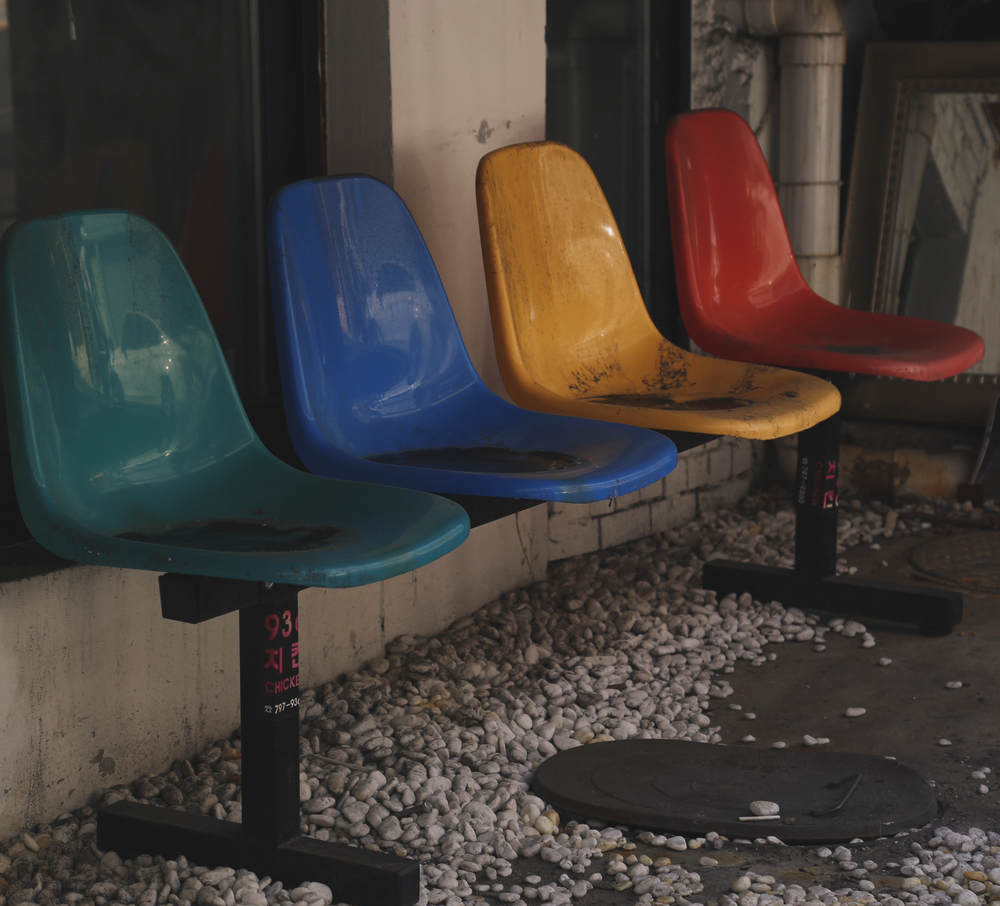
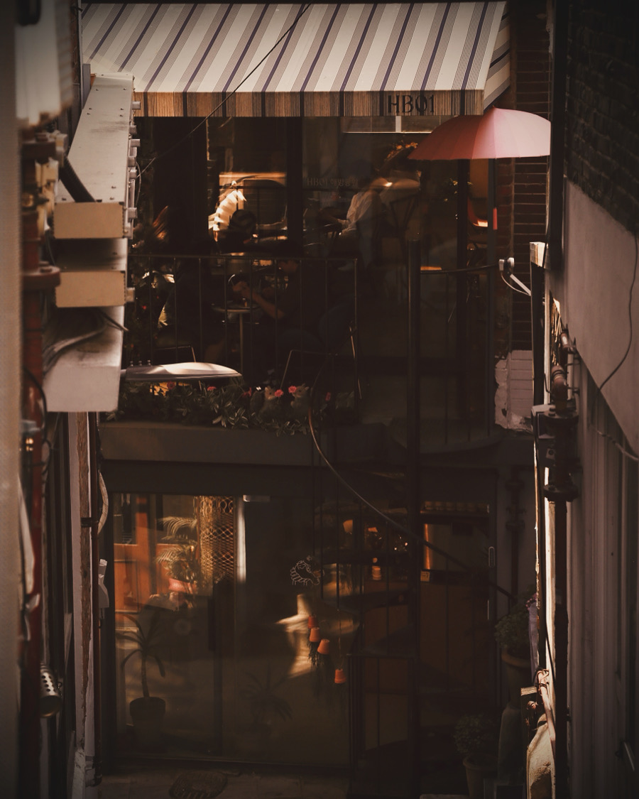
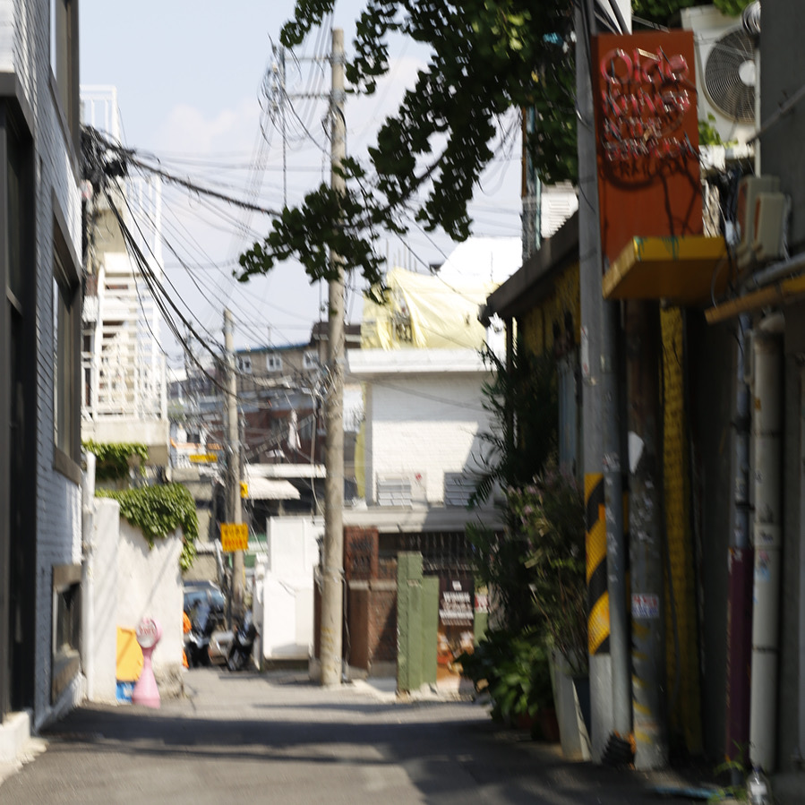

SMPaK
413
35mm film for portfolio
Design | ©2025 SUNGMIN
ISO 0413 | exp. unlimited
Home
About Me
Skills
Works
Contact
ABOUT
ME
끊임없는 관찰과 구조화를 통해
브랜드와 사용자의 연결고리를 만드는 디자이너입니다.
UX/UI Design · Prototyping · Branding
SKILLS
WORKS
프로젝트 1
Doughnut
프로젝트 2
Time is Gold
프로젝트 3
Train
프로젝트 4
Street
프로젝트 5
Retro
프로젝트 6
Mono

프로젝트 7
Chairs

프로젝트 8
Alley
프로젝트 9
Seoul Forest

프로젝트 10
Itaewon
CONTACT
이메일: pjmsm0412@naver.com
포트폴리오 문의